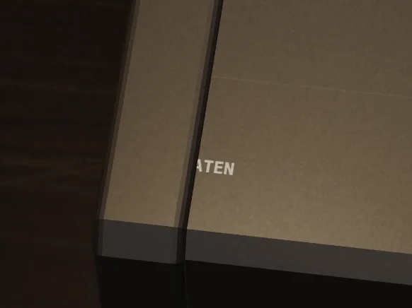
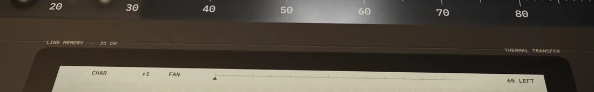
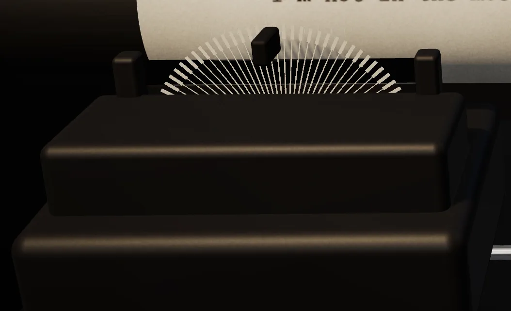

A thermal typewriter that never existed, taken apart one piece at a time. I built it with Claude Opus 5.5 by directing: I brought the references and made the calls, and Claude did the research and wrote the code. Scroll, and the machine follows.
I’d been obsessed with thermal typewriters for a while and wanted to make one. Not a copy of a real model, more like a game environment built around an ordinary writing app.
Panasonic Thermalwriter 12.Donald Trung Quoc Don · CC BY-SA 4.0
Canon Typestar (1986).Akhilan · Aksharam Museum · CC BY-SA 4.0
It mixes Canon’s Typestar, Panasonic’s Thermalwriters and the line display of Canon’s AP-1500. A line waits on the display, and when you press Return it’s printed for good.
It was also a test of building by direction. With Claude Opus 5.5 I worked in a loop: share references (photos, a recording of a real Typestar), ask for research first, react to each version, and decide what to cut. The chapters below are those decisions.
01 · The idea
A world, not an interface
Games make a space feel alive with light, sound and objects that react. Productivity apps rarely try. I wanted a writing tool designed more like a game level than a settings screen.
In games, an interface that lives inside the world is called diegetic, like the health meter built into the suit in Dead Space. Here the display, the printed labels, the paper and the bin are the interface. Place helps memory too: in Microsoft’s Data Mountain study (1998), people found saved pages faster when they had arranged them in space themselves.
What it gives
You remember where things are, like on a real desk.
Sound and motion confirm actions, so there are fewer messages.
Permanence makes you think before committing a line.
What it costs
It’s slower than a text box, and it needs a decent graphics chip. Phones are out.
3D and small printed labels are harder for screen readers and low vision.
Search and sync get harder when notes are objects.
The novelty fades, so every detail has to be useful.
02 · Body · parts 1–4
One body, not an assembly
One continuous shape, from the lip at the front to the raised cover at the back, with solid caps at the ends.
Canon QS100.Joxemai · CC BY-SA 4.0
Panasonic KX-E508.Ross Griff · CC BY 2.0

Before
Before: separate blocks, with a seam cutting through the name.
03 · Controls · parts 5, 7–9
Printed, not modelled
The shortcuts are printed on the body, and three controls move: the paper switch (Alt P), the line-space lever (Alt S) and the width dial (Alt W).
Line-spacing settings printed on a Brother typewriter.Grutness · GFDL
Labels printed around the Thermalwriter’s display.Donald Trung Quoc Don · CC BY-SA 4.0
04 · Display · part 6
Line memory
A line waits here until you press Return, and you can edit it freely. The idea comes from the AP-1500, which held 31 characters. The dots follow the 5×7 grid of old LCD chips.
A character LCD built on the HD44780 controller.MikroLogika · CC BY-SA 3.0
The HD44780 character ROM.Hitachi · public domain

Before
Before: labels crossing the display’s edge, and a 1½ that didn’t fit its cell.
05 · Print mechanism · part 10
The frosted ruler
A smoked plate over the print line. The head moves underneath, blurred, with the column scale on top.
The Thermalwriter’s clear paper guide.Donald Trung Quoc Don · CC BY-SA 4.0
The same plate from above.Donald Trung Quoc Don · CC BY-SA 4.0
06 · Mechanisms
Four ways to put a letter on paper
Typebars, type balls, daisy wheels and thermal heads each print differently, and each changes how the machine sounds and looks.
Typebar.Jiří Sedláček · CC BY 3.0
Type ball and daisy wheel.Jamie Cox · CC BY 2.0
Daisy wheel head.Chiffre01 · CC BY-SA 4.0
Thermal head.Gravis · CC BY-SA 4.0
Sound
From the seat
For Platen
Typebar
Strike and bell
A busy fan of arms
Needs a key per bar, which drags in a 3D keyboard
Type ball
A fast clatter
Hidden in the carriage
Iconic, but invisible while working
Daisy wheel
A hammered rattle
Wheel and hammer in the way
Our first build. It hid the letter being printed.
Thermal
A soft whine and a clack
A small head and its heat
Reads instantly, quiet, and the letter appears as the head passes

Before
Before: the first mechanism, a daisy wheel.
07 · Print mechanism · part 11
The thermal head
A ceramic strip with 26 tiny heaters, as on the Typestar 7. It presses on, heats each letter as it crosses the line, then lifts and returns.
Thermal paper darkens wherever it is heated.IIVQ · Tijmen Stam · CC BY-SA 3.0
Canon Pocketronic’s thermal head (1970).Mister rf · CC BY-SA 4.0
It holds heat, too. After a pause the first letters print lighter, and a fast run prints a little darker, so your rhythm shows on the page.
08 · Print mechanism · part 12
Film ribbon & cassette
An ink film runs from the cassette, around the head and back, and the reels turn as it’s used.
A film ribbon cassette, opened.Raimond Spekking · CC BY-SA 4.0
IBM Wheelwriter.mliu92 · CC BY-SA 2.0
09 · Type
Courier, the old way
12-point Courier at 10 characters per inch, each letter slightly off and saved that way. Bold and underline are a second pass of the head, as a typist would do it.
IBM's Courier (1955), designed for typewriters.Adrio · CC BY-SA 4.0
Courier Prime (2013), used here.Adrio · CC BY-SA 4.0
Daisy-wheel output from 1980–81.Pointillist · CC BY-SA 3.0
10 · Correction
Type and erase
In line mode you fix things on the display. In character mode, backspace lifts the letter off the paper with correction film, bold and underline included.
A Triumph-Adler Gabriele 100 carriage and its correction-tape spool.Raimond Spekking · CC BY-SA 4.0
Brother 660TR "Correction".Freediving-beava · CC BY-SA 3.0
11 · Print mechanism · parts 13–14
The platen
The rubber roller that holds the paper. Typewriters have had one since the 1870s, and the project is named after it.
Adler Universal.Science Museum Group · CC BY 4.0
Erika 3006.Piotr Doroszewski · CC BY-SA 4.0
12 · Paper path · parts 15–17
Roll, fanfold, card
Paper comes up from below, wraps the platen past the head and leans back on a support, so printed lines move up and away from you.
Thermal rolls.Acheolg · CC BY-SA 4.0
Fanfold paper with tractor holes.Kungfuman · CC BY-SA 3.0
Green-bar paper.David Swart · CC BY 2.0
A ruled 3×5 index card.ArnoldReinhold · CC BY-SA 4.0
13 · Tear
Letting go
Ctrl X tears the page off and it falls to the desk. Tearing is the only way to save.
Perforated continuous paper.Agaath · CC BY-SA 4.0
Perforation patterns for continuous forms.Public domain
14 · The desk
A desk that never ends
Pages collect on a desk with no edges, and stay where you leave them. Drag empty space to move around. Scrolling steps between four views, from the paper up close to an overhead view of every page.
15 · The desk
Pick it up
Click a page to hold it up and read. From there you can copy the text, save a PNG with transparent torn edges, or throw it away.
16 · The desk
Mark it up
Press M and draw on any page. V goes back to moving, Ctrl Z undoes.
17 · The desk
The bin
Drop a page on the bin and it crumples in. Click a ball to take it back. Only Empty bin and Clear desk delete for good, and both ask first.
18 · The desk
Tidy up
Alt T lays every page out in a grid, oldest first, one row per day.
19 · Everything else
What I left out
A 3D keyboard (you have one), the paper bail, screws and vents, paper jams, and folding pages, which I tried and removed.
_01.jpg?width=720)


_03.jpg?width=720)


_04.jpg?width=720)
_02.jpg?width=720)


.jpg?width=720)


.jpg?width=720)


.png?width=720)


.jpg?width=720)